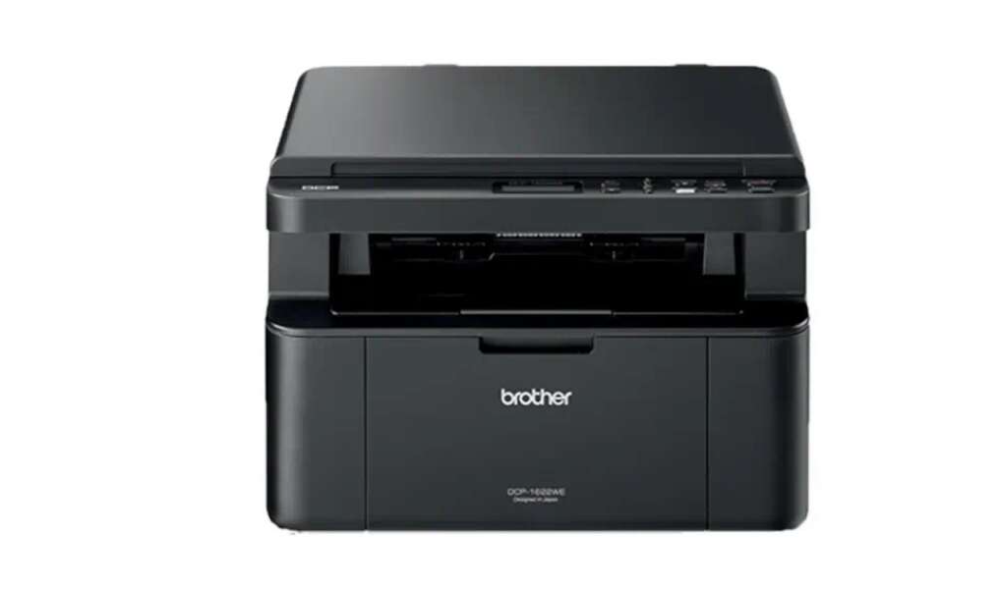

A lézeres nyomtató por alapú festéket használ, amit a lézerrel elektromosan feltöltött „fényhenger” visz át a papírra. Ez a kép azonban még letörölhető lenne, ezért fixálni kell, ami ebben az esetben hővel történik. A papírt és a festéket felhevíti, a por megolvad és a papír felületére ragad.
Fényérzékeny anyaggal bevont és elektromosan feltöltött henger található. Ezen egy lézersugárral jelölik meg a nem fehér pontokat: ahol a lézer a hengerhez ér, ott a henger semleges lesz vagy ellentétesen lesz töltött a henger többi részéhez képest. Amikor pedig a henger a festékrésszel érintkezik, akkor azokra a részekre tapad festék, melyeket ért a lézersugár. A festék ezután átkerül a papírra, majd beleolvad, mikor a papír áthalad egy 200 °C-os hengerpár között.
